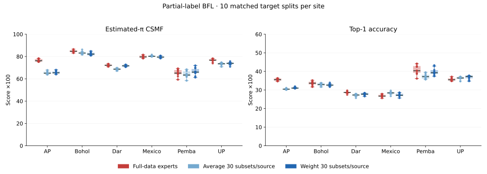
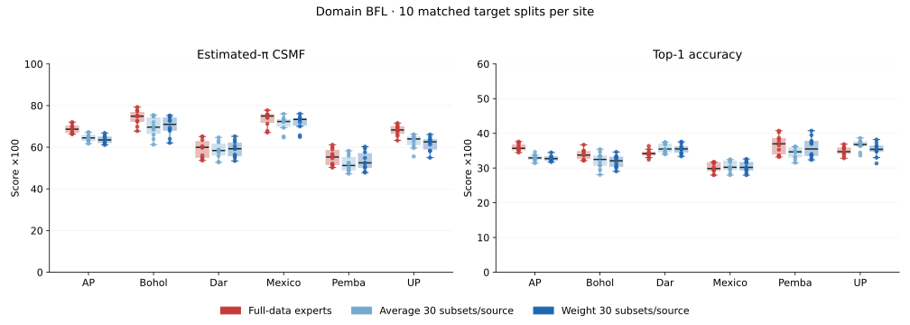
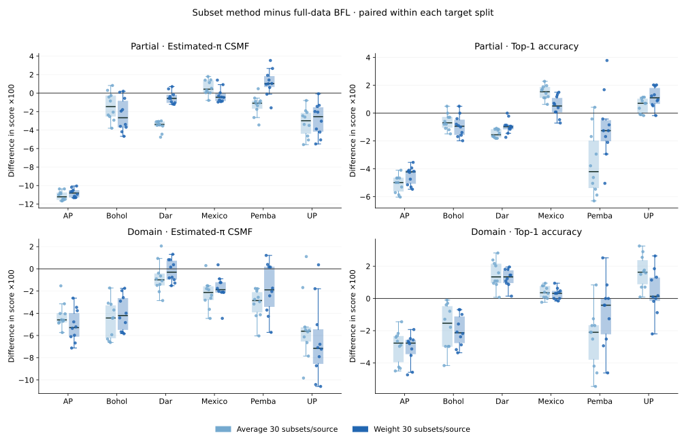
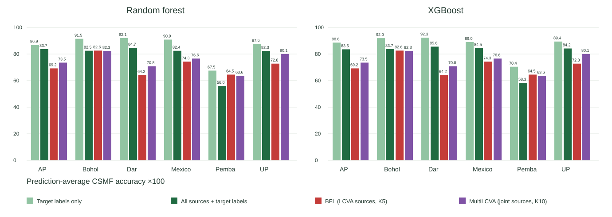
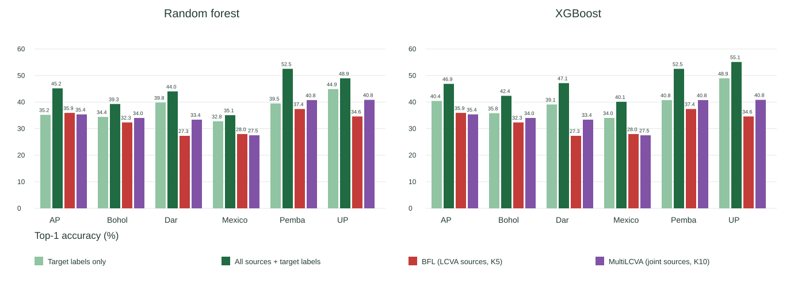

| Period | Updated | Category / parent |
|---|---|---|
| November 6–12, 2026 | November 20, 2026 | BFL / weekly research results |
| Partial-label method | Parameter CSMF | Top-1 |
|---|---|---|
| Full-source BFL | 75.85% | 33.53% |
| Average 30 subset likelihoods | 72.52% | 32.08% |
| Learn weights over 30 subsets/source | 73.25% | 32.58% |



| Method | Prediction-average CSMF | Top-1 | Balanced accuracy |
|---|---|---|---|
| Source-frequency reference | 96.78% | — | — |
| RF | 94.56% | 65.34% | 24.28% |
| XGBoost | 96.55% | 63.75% | 25.46% |


| Arm | Parameter CSMF | Top-1 |
|---|---|---|
| original_partial | 75.14% | 32.02% |
| covariate_partial | 74.85% | 32.10% |
| bayesian_mean_fixed | 77.38% | 35.09% |
| mle_fixed | 77.84% | 35.71% |